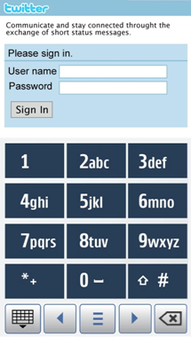

Split view inputs
Split view mode inputs are opened similar to the full screen inputs. Virtual ITU-T and QWERTY keyboards can be displayed in the split view mode. The application can decide whether to use the full screen input or split view input.
Split view input uses the application’s own editor field, and the application remains partly visible when the input is opened. Applications have the responsibility of keeping the editor visible while user is typing. When the input opens, the status pane is hidden. Split view is closed by tapping the specific closing button present within the input.

Figure: Split view ITU-T

Figure: Split view QWERTY
In hybrid devices, when the hardware keyboard is opened, the virtual keyboard (full screen or split view) disappears.